4. Eighty 20 Logo¶
In this exercise we will use the operation of distributing elements and the installation of new text fonts to compose the logo.
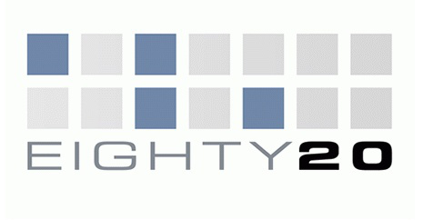First we will download the following text fonts.
Once downloaded, we can install them by clicking on each of the files with the right mouse button and selecting install.
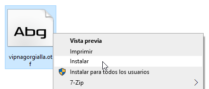Now we will open a new document with Inkscape.
Next we will create a square with the tool to draw squares and rectangles
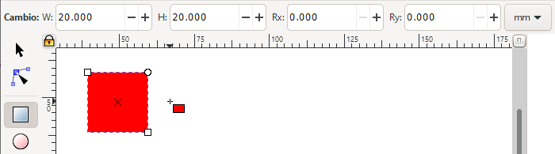 and we change its size in the upper bar to 20 by 20 millimeters.
and we change its size in the upper bar to 20 by 20 millimeters.To continue we will copy the logo that appears at the beginning of this lab and paste it into Inkscape.
We select the square again and choose from the menu
Object... Fill and border....Now we are going to use the Select colors from the image tool
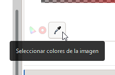Selecting the color of a light square within the copied logo image.
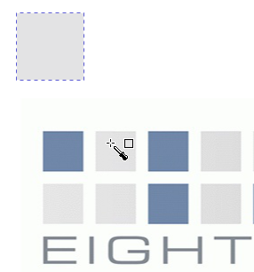Once the square has the desired color, we are going to duplicate it another 13 times by pressing Control+D 13 times at the same time.
 +
+  x13
x13At this moment, only the last copy that we have duplicated will be selected, so we have to select all 14 squares with the mouse.
Once selected, we are going to distribute the squares in 2 rows and 7 columns from the
Object... Order...menu with the following options.2 Rows and 7 Columns
Set spacing to 5mm on X and 5mm on Y
And click on the order button.
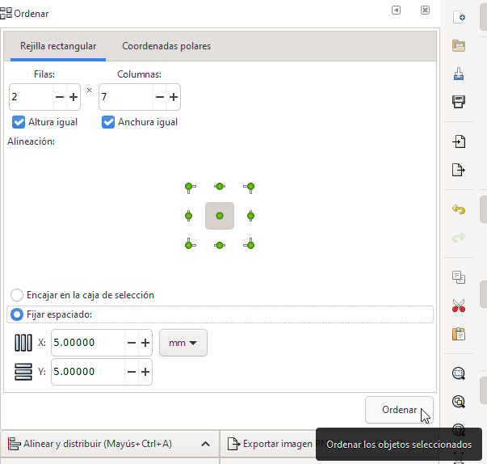The result will be the following.

From the
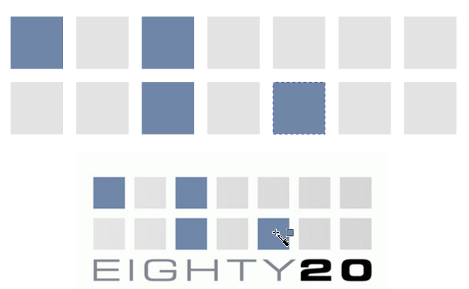Object... Fill and Stroke...menu, we are going to select the darker color of some squares with the 'Select colors from the image' tool, just as we did previously with the lighter color for the first square.To continue we are going to write with the tool to create text
 the capitalized word EIGHTY below the squares.
the capitalized word EIGHTY below the squares.Now we will change the font to Acens Normal in the top bar.
We'll also change the letter spacing to 10.
Once written, we are going to click on the select tool
 and we will change the size of the text to 15 millimeters high (H) by 123 millimeters wide (W).
and we will change the size of the text to 15 millimeters high (H) by 123 millimeters wide (W).To finish, in the
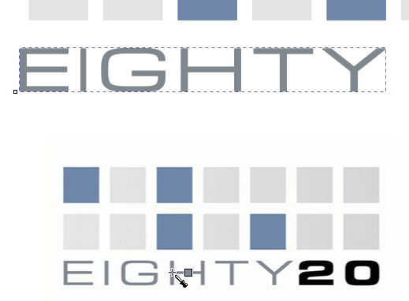Object... Fill and border...menu we will choose that the text font does not have a stroke color and in the fill we will choose the same color as the font of the logo with the Select colors tool. the picture.We continue with the same steps to write the text 20 with the Vipnagorgialla Bold font, with a spacing between letters of 10.
With the select tool
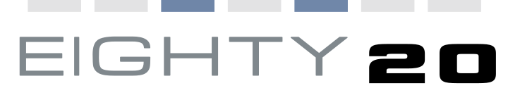 we will change the size of the text to 15 millimeters high (H) by 43 millimeters wide (W).Once the text is written, we are going to move it to its exact place. We start by selecting the lower left box and then, pressing the shift key, we also select the text EIGHTY.
In the
Object... Align and Distribute...menu we choose the option to align left sides and align top side to the bottom edge of the anchor. 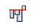
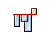
The word EIGHTY will be aligned with the boxes.
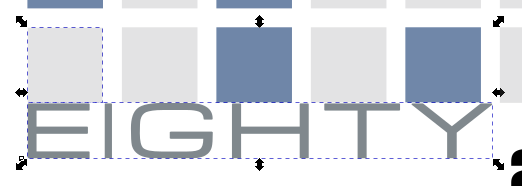Now we will select only the EIGHTY text and with the
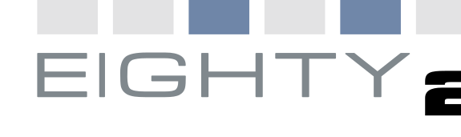Object... Transform...menu in the Move tab we will choose to move 6 millimeters vertically downwards of relative movement. By pressing the Apply button, the text will be placed in its place.To move the number 20 we will select the box at the bottom right next to the number 20 (by clicking on them while pressing the shift key).
In the
Object... Align and Distribute...menu we choose the option to align right sides and align top side to the bottom edge of the anchor.We select only the text 20 and with the
Object... Transform...menu in the Move tab we will choose to move 6 millimeters vertically downwards of relative movement. By pressing the Apply button, the text will be placed in its place and the logo will be finished.